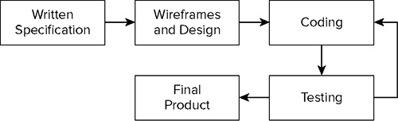

iOS Applications are developed using iOS SDK and Xcode, which is Apple's integrated development environment (IDE). Xcode provides everything you need to create great apps for iPhone, iPod touch and iPad.
The Xcode suite also includes most of Apple's developer documentation, and built-in Interface Builder, an application used to construct graphical user interfaces. The Xcode toolset includes the amazing Xcode IDE, with the Interface Builder design tool and Apple LLVM compiler fully integrated. The Instruments analysis tool is also included, along with dozens of other supporting developer tools.
A Suitable Mac
To develop apps for the iPhone and the iPad using the official set of tools provided by Apple, you will first need an Intel-based Mac running Mac OS X Lion with a minimum 2GB of RAM and at least 11GB of free space on your hard disk. You do not need a top-spec model to get started. In fact a Mac Mini or a low-end MacBook will work just fine. Processor speed is not going to make much difference to you as a developer. You will be better off investing your money toward more RAM and hard disk space instead. These are things you can never get enough of. A large screen does help, but it is not essential.
A Device for Testing
If you are reading this, chances are that you have used an iPhone/iPad/iPod Touch and probably even own one or more of these nifty devices. As far as development is concerned, there aren’t many differences between developing for any of the devices iPhone/iPad/iPod Touch. When you are starting out as an iOS developer, you will test your creations on the iOS Simulator. The iOS Simulator is an application that runs on your Mac and simulates several functions of a real iOS device. At some point, though, you will want to test your apps on a physical device. As good as the iOS Simulator may be, you must test on a physical device before submitting your app to the App Store. Another good reason to test on a physical device is that the processor on your Mac is much faster than that on the iPhone/iPad. Your app may appear to execute much faster on your Mac (in the iOS Simulator) than it does on the real thing. If the app you are going to make is targeted at iPhone users, you can also use an iPod Touch as the test device. These are significantly cheaper than iPhones and for the most part offer the same functionality as their phone counterparts.
An iOS Developer Account
To develop your apps you will need to download the latest version of Xcode and the iOS SDK (Software Development Kit). To do this you must sign up for the Apple Developer Program to become a registered developer. The signup process is free and you can immediately begin to develop your first apps. Limitations exist as to what you can do for free. To submit your apps to the App Store, get access to beta versions of the iOS/SDK, or test your apps on a physical device, you need to become a paying member.
The Official iOS SDK
The Apple iOS SDK (Software Development Kit) is a collection of tools and documentation that you can use to develop iOS apps. The main tools that make up the SDK are:
-
Xcode: Apple’s integrated development environment (IDE) that lets you manage your products, type your code, trace and fix bugs (debugging), and lots more.
-
Interface Builder: A tool fully integrated into the Xcode IDE that lets you build your application’s user interface visually.
-
iOS Simulator: A software simulator to simulate the functions of an iPhone or an iPad on your Mac.
-
Instruments: A tool that will help you find memory leaks and optimize the performance of your apps.
The Typical App Development Process
Whether you intend to develop iOS apps yourself or manage the development of one, there is a basic sequence of steps involved in the development process. This section covers these steps briefly.

Writing a Specification
The development of an app begins with a concept. It is good practice to formally put this concept on paper and create a specification. You do not necessarily need to type this specification although it’s a good idea to do so. At the end of the project you should come back to the specification document to see how the final product that was created compares with the original specification. As you build your experience developing iOS applications, this difference will become smaller. The specification must address the following points:
A short description in 200 words or less
The target audience/demographic of the users
How will it be distributed (App Store, or direct to a small number of devices)
A list of similar competing apps
A list of apps that best illustrate the look-and-feel your app is after
The pricing model of competing apps and potential pricing for your app
Wireframes and Design
A wireframe is large drawing that contains mockups of each screen of your app as well as lines connecting different screens that indicate the user’s journey through your application. Wireframes are important because they can help identify flaws in your design early on (before any coding has been done). They can also be used to show potential clients how a particular app is likely to look when it’s completed. There is no right or wrong way to make a wireframe. If it is for your personal use; you can just use a few sheets of paper and a pen. If it is for a client you might want to consider using an illustration package.
Coding
The actual process of creating an iOS app involves using the Xcode IDE to type your code. iOS apps are usually written in a language called Objective-C. An iOS app typically consists of several files of Objective-C code along with resource files (such as images, audio, and video). These individual files are combined together by a process called compilation into a single file that is installed onto the target device. This single file is usually referred to as the application binary or a build.
Testing
It might sound obvious, but you must test your app after it has been developed. As a developer you test your code frequently as you write it. You must also perform a comprehensive test of the entire application as often as possible to ensure things that were working in the past continue to do so. This form of testing is called regression testing. It helps to make a test plan document. Such a document basically lists all the features that you want to test, and the steps required to carry out each test. The document should also clearly list which tests failed. The ones that fail will then need to be fixed and the test plan document can provide the replication procedure for the defect in question. When your app is ready you will want to list it on the iTunes App Store. To do so involves submitting your app for review to Apple. Apple has several criteria against which it reviews applications and if your app fails one or more of these criteria it will be rejected—in which case you will need to fix the appropriate code and resubmit. It is best to test your apps thoroughly before submitting them in the first place. You must always test on a real iOS device before submitting your app for the App Store review process, or giving it to a client to test. Testing on the iOS Simulator alone is not sufficient. If you are developing for a client, you will probably need to send them a testable version of your work periodically for them to review. To do this you will need to give them something they can install on their devices.